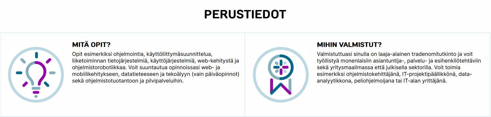

Perustiedot Opintojen sisältö Opiskelun käytännöt Hakuohjeet Opiskelijat kertovat

ENGLISH | Kirjaudu

Oletko kiinnostunut ohjelmoinnista ja erilaisista järjestelmistä sekä näiden kaupallisesta hyödyntämisestä? Siinä tapauksessa olet oikeassa paikassa. Tietojenkäsittelyn koulutuksessamme opit ICT-alan osaajaksi, jolla on erinomaiset työllistymismahdollisuudet.
Opit esimerkiksi kehittämään liiketoimintamahdollisuuksia parantavia tietojärjestelmiä asiakasyrityksille. Laajennat osaamistasi tiimityönä tehtävissä käytännön projekteissa ja saat ymmärrystä modernista liiketoiminnasta. Opintojesi aikana pääset myös verkostoitumaan alan toimijoiden kanssa.
Kaikille yhteisissä ydinosaamisen opinnoissa opiskelet keskeisiä tietojenkäsittelyn taitoja, kuten ohjelmointia ja erilaisten järjestelmien käyttöä ja hallintaa. Tutustut muun muassa yleisimmin käytettyihin ohjelmointikieliin, liiketoimintaprosessien automatisointiin, käyttöliittymäsuunnitteluun, web-kehitykseen ja ohjelmistorobotiikkaan. Opintojesi aikana opit myös ymmärtämään ja huomioimaan alan eettisyyteen ja kestävyyteen liittyviä haasteita ja löytämään niihin ratkaisuja.
>Kaikille yhteisissä ydinosaamisen opinnoissa opiskelet keskeisiä tietojenkäsittelyn taitoja, kuten ohjelmointia ja erilaisten järjestelmien käyttöä ja hallintaa. Tutustut muun muassa yleisimmin käytettyihin ohjelmointikieliin, liiketoimintaprosessien automatisointiin, käyttöliittymäsuunnitteluun, web-kehitykseen ja ohjelmistorobotiikkaan. Opintojesi aikana opit myös ymmärtämään ja huomioimaan alan eettisyyteen ja kestävyyteen liittyviä haasteita ja löytämään niihin ratkaisuja.
Ydinosaamisen opintojen jälkeen valitset oman mielenkiintosi mukaisesti profiloivan opintokokonaisuuden, jonka parissa haluat syventää työelämätaitojasi. Tietojenkäsittelyn päiväopinnoissa tarjoamme sinulle mahdollisuuden valita kolmen profiloivan opintokokonaisuuden väliltä. Profiloivissa opinnoissa opetuskieli päivätoteutuksessa on lähtökohtaisesti englanti.
Ydinosaamisen opintojen jälkeen valitset oman mielenkiintosi mukaisesti profiloivan opintokokonaisuuden, jonka parissa haluat syventää työelämätaitojasi. Tietojenkäsittelyn päiväopinnoissa tarjoamme sinulle mahdollisuuden valita kolmen profiloivan opintokokonaisuuden väliltä. Profiloivissa opinnoissa opetuskieli päivätoteutuksessa on lähtökohtaisesti englanti.
Web- ja mobiilikehitys (päiväopinnot, monimuoto-opinnot itsenäisemmin suoritettavana) Datatiede ja tekoäly (päiväopinnot) Ohjelmistotuotanto ja pilvipalvelut (päiväopinnot, monimuoto-opinnot)
Monimuotototeutuksessa tarjoamme ensisijaisesti yhtä profiloivaa opintokokonaisuutta eli ohjelmistotuotanto ja pilvipalvelut -kokonaisuutta sekä tämän rinnalla web- ja mobiilikehityksen profiloivaa opintokokonaisuutta itsenäisemmin opiskeltavana. Tarjoamme myös erilaisia valinnaisia opintoja esimerkiksi peliohjelmointiin ja low-code kehitykseen liittyen.
Opintojesi aikana kerrytät työelämäosaamistasi erilaisten, tiimityönä tehtävien projektien parissa. Lisäksi järjestämme opiskelijoillemme kaksi kertaa vuodessa BitJobs-rekrytointitapahtuman, jossa on mukana useita alan yrityksiä. Tapahtumassa sinulla on mahdollisuus hankkia tärkeitä kontakteja tulevaa työuraasi varten.
Osana tutkintoa teet harjoittelun ja opinnäytetyön. Harjoittelussa pääset käyttämään oppimiasi taitoja oman alasi työpaikassa. Opinnäytetyössä tutkit sinua kiinnostavaa aihetta analyyttisesti ja ratkaisukeskeisesti, usein yhteistyössä alan yrityksen kanssa.
Liiketalouden tradenomeille suunnatussa muuntokoulutuksessa päivität aiempaa tutkintoasi it-alan opinnoilla. Hyödynnät jo hankitun liiketoimintaosaamisesi osana tutkintoa, joten sinun on mahdollista opiskella tietojenkäsittelyn tradenomiksi 1,5 vuodessa.
Ensimmäisenä vuonna opiskelet 60 opintopisteen verran pakollisia ydinopintoja, jotka sisältävät esimerkiksi tietokantoja, ohjelmointia, ohjelmistorobotiikkaa, käyttöjärjestelmiä ja web-kehitystä. Opinnäytetyösi aloitat jo ensimmäisen vuoden keväällä ja viimeistelet sen syksyllä. Tutustu opintojen sisältöihin tarkemmin opetussuunnitelmassa.
Opiskelet flipped classroom eli käänteinen luokkahuone -mallilla, jolloin tutustut itsenäisesti käsiteltävään aiheeseen ja siihen liittyviin tehtäviin ennen yhteisiä verkkoistuntoja. Verkkoistuntojen aikana käymme läpi kyseisen viikon aihetta, keskustelemme haasteista ja käymme läpi heränneitä kysymyksiä. Muuntokoulutuksessa opiskelet samassa tahdissa kuin tietojenkäsittelyn päivä- ja monimuotototeutuksessa. Opiskelijana edellytämme sinulta sitoutumista opintojen etenemiseen sekä omatoimisuutta ja aktiivista opiskeluotetta.